字体属性
CSS字体属性定义字体:颜色、大小、加粗、文字样式
- 颜色
定义：规定文本颜色
一共四种方法：- 英文意思，如：red、yellow、blue、black
- 十六进制(#开头，接0~9与A~F整数区间的数，共六位)，如：黑(#000000)
- rgb(颜色通道定义)[共需输入三个数值，每个数值的范围在0~255区间]，如:黑[rgb(0,0,0)]
- rgba(颜色通道定义)[共需输入四个数值，前三个与rgb一样，第四个数值0~1,意思就是颜色的深浅度，0完全透明，1完全不透明]，如：黑色_半透明[rgba(0,0,0,0.5)]
- font-size
- 定义：设置文本大小
- 用意：管理文字的大小，在网页设计中是非常重要的。
- 注意:
- 但是，不能通过调整字体大小使段落看上去像标题，或则使标题看上去像段落
- 不同浏览器和设备可能有不同的最小字体限制，例如，Chrome浏览器接受的最小字体大小通常是12px，但具体值可能因设备和用户设置而异
- 示例：p{font-size:25px}
- font-weight
- 定义：设置文本的粗细
- 属性值
- bold：定义粗体字符
- bolder：定义更粗的字符
注意：bold与bolder在当今浏览器显示效果是一样的，所以一般用值：bold就可以了
- lighter:定义更细的字符
- 100~900：定义由细到粗，400等同于默认，700等同于bold
- font-style
- 定义:指定文本的字体样式
- 属性值：
- normal：默认值
- italic:定义斜体字
- 注意：设置的样式不仅可以将非斜体字改为斜体字，还可以将I标签(默认是斜体字)，改为默认字体
- font-family
- 定义：font-family属性指定一个元素的字体
- 温馨提示：
- 可以添加多个字体(值)，每个值用逗号隔开
- 如果字体名称包含空格，它必须加上引号
- 字体使用方式:由前到后，前面失效或无法使用，后面排上去
- 如：p{font-family:"微软雅黑","华文宋体",serif;}
背景属性
- background-color属性
- 定义:设置背景颜色
.box{ background-color:red;（颜色同样有四种方式） } - background-image属性
- 定义：设置元素的背景图像
- 解释：
元素的背景是元素的总大小，包括填充和边界(不包括外边距)。默认情况下background-image属性放置在元素的左上角，
如果图像不够大的话会在垂直方向和水平方向平铺图像，如果图像大小超过元素大小从图像的左上角显示元素大小那部分。 - 具体过程：
- 先在body标签内，建立div标签，并引用对应的选择器(可以是元素选择器、类选择器、ID选择器等)
- 在style标签内，对应的选择器添加样式，设置高、宽，以及最主要的：background-image属性声明
- 声明语法：background-image:url("图片具体地址")
- 代码演示：
/* 可以先设置一个div容器，定义宽度和高度，将图片装进这个容器里面，图片的显示部分以容器大小决定。*/ .div_1{ width:500px; height:500px; background-image:url("图片具体地址"); } - 显示效果
整个过程意思就是：设置一个div容器，定义宽度和高度，将图片装进这个容器里面，图片的显示部分以容器大小决定。
图片原本样子：
容器内的样子：
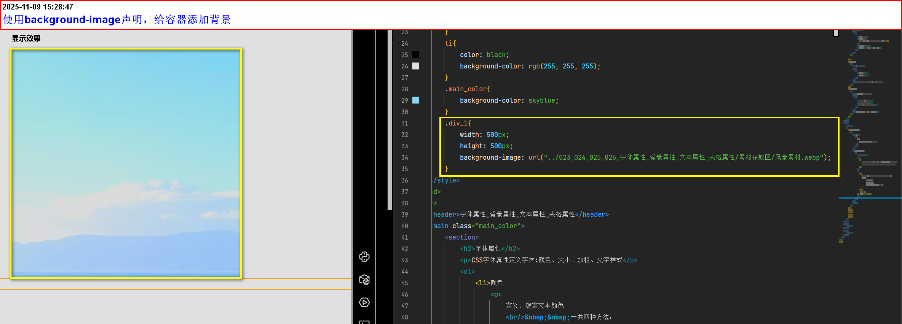
当然默认显示的左上方，可以通过别的声明更改显示位置。
- background-repeat属性(设置图片平铺方式)
- 定义：该属性设置如何平铺背景图像
- 解释：
- 该声明就是，当设置的容器过大，且图片过小时，该怎么显示背景图片
- 默认水平、垂直同时平铺(就是重复显示) 如：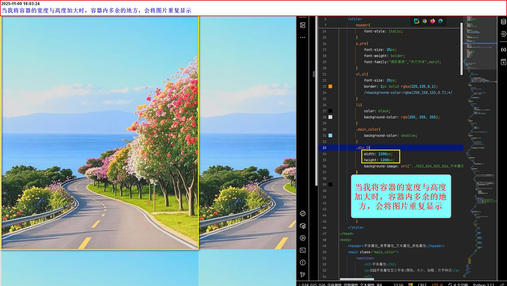
- 声明的值及对应解释:
值 说明 repeat 默认值 repeat-x 只向水平方向平铺 repeat-y 只向垂直方向平铺 no-repeat 不平铺 - 各个值的平铺方式演示：
- 默认：
- 水平：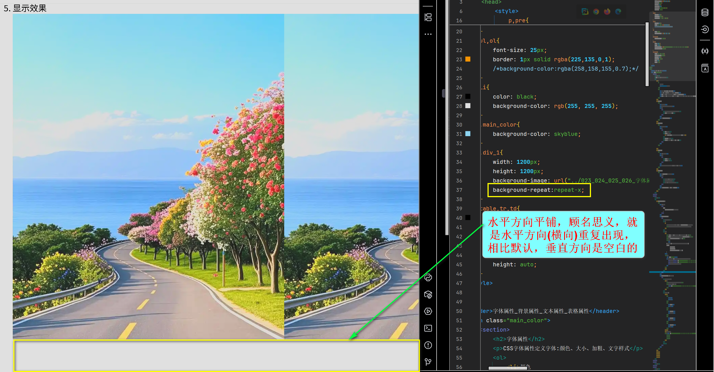
- 垂直：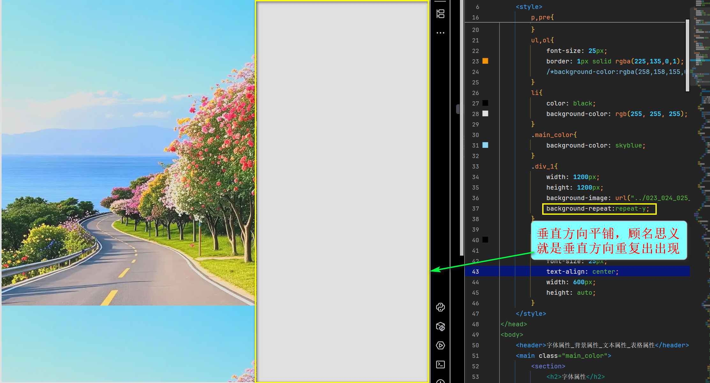
- 不平铺: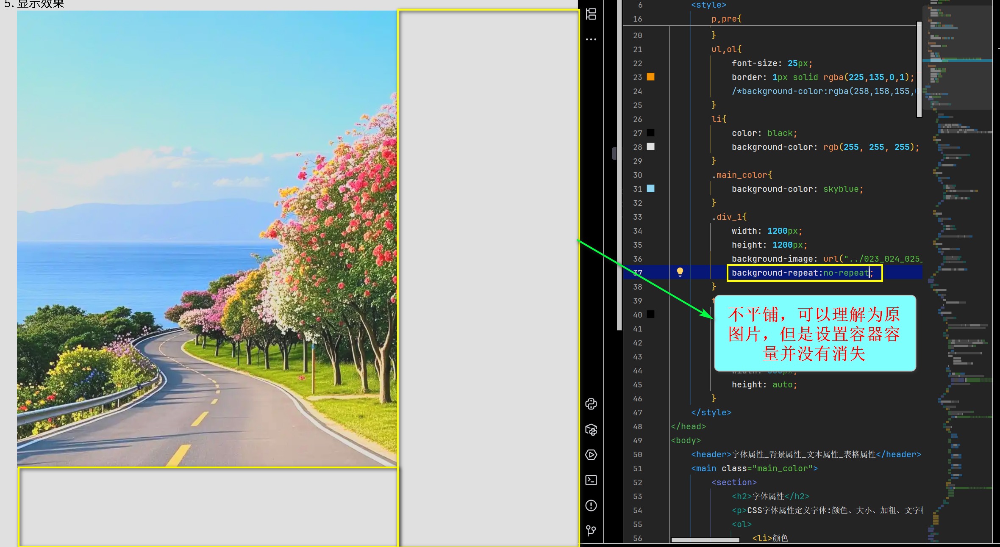
- 总结：
- background-repeat指的就是容器过大时背景图片的显示方式
- repeat-x：表示背景图像只在水平方向上重复平铺
- repeat-y:表示背景图像只在垂直方向上重复平铺
- no-repeat:表示背景图像不会重复平铺，只显示一次
- 注意：no-repeat是，背景图像只显示一次，不会重复填充整个容器。容器内的空间仍然存在，只是背景图像不会重复显示。
- 定义：该属性设置如何平铺背景图像
- 定义:设置背景颜色
- background-size属性：
- 定义：该属性设置背景图像的大小
- 各个值及说明
值 说明 length 设置背景图片的宽度和高度，第一个值为宽度，第二个值为高度，如果只设置一个值，第二个值为auto percentage 计算相对位置区域的百分比，第一个值为宽度，第二个值为高度，如果只设置一个值，第二个值为auto cover 保持图片纵横比并将图片缩放成完全覆盖背景区域的最小大小 contain 保持图片纵横比并将图像缩放成适合背景定位区域的最大大小 - 各个值，演示
- 默认图片，平铺方式默认
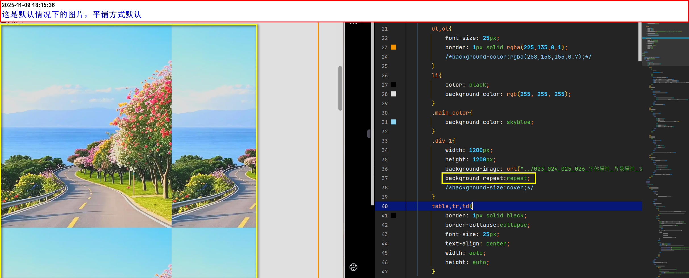 - 使用length设置图片大小(其实就是输两个值[记得带单位]第一个值为宽度，第二个值为高度，只设一个值，第二个值auto[浏览器自己计算])
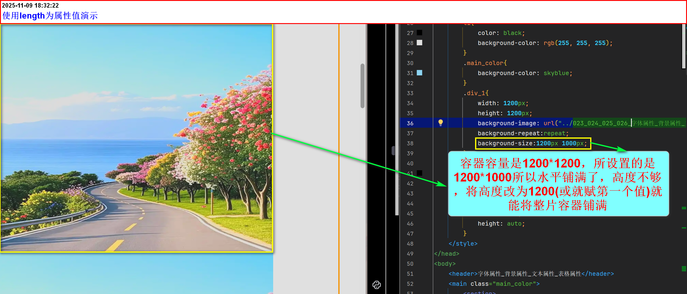 - 使用percentage设置大小(其实就是输入两个值[但是单位固定是%]第一个值为宽度，第二个值为高度，只设一个值，第二个值auto[浏览器自己计算])
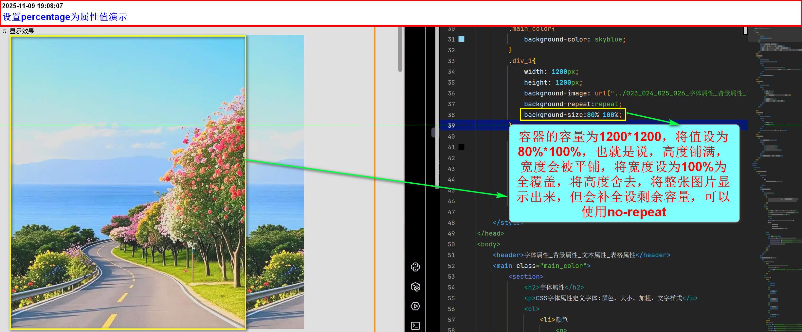 - 使用cover设置图片大小(浏览器会将图片缩放到最小尺寸，同时保持宽高比例，确保图片完全覆盖容器的整个区域。如果容器的宽高比与图片的宽高比不同，图片可能会被裁剪，以适应容器的尺寸。这与背景图像是否平铺无关，通常结合background-repeat: no-repeat使用，以确保背景图像只显示一次])
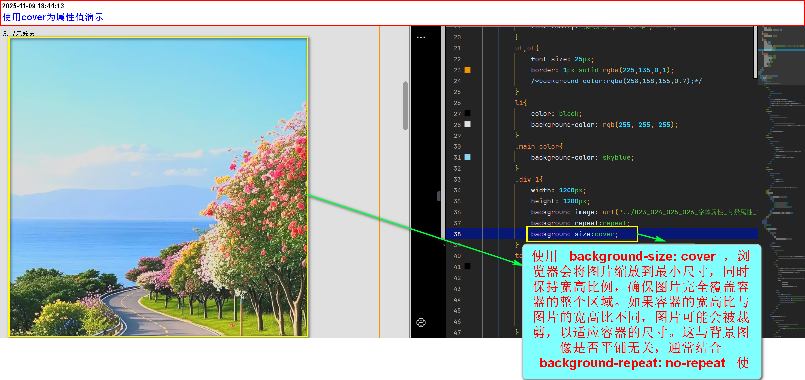 - 使用contain设置图片大小(contain为属性值[浏览器会将图片缩放到最大尺寸，同时保持宽高比例，确保图片完全显示在容器内。如果容器的宽高比与图片的宽高比不同，图片可能会在容器内留白。结合使用 background-repeat: no-repeat ，可以确保背景图像只显示一次，不会重复平铺。])
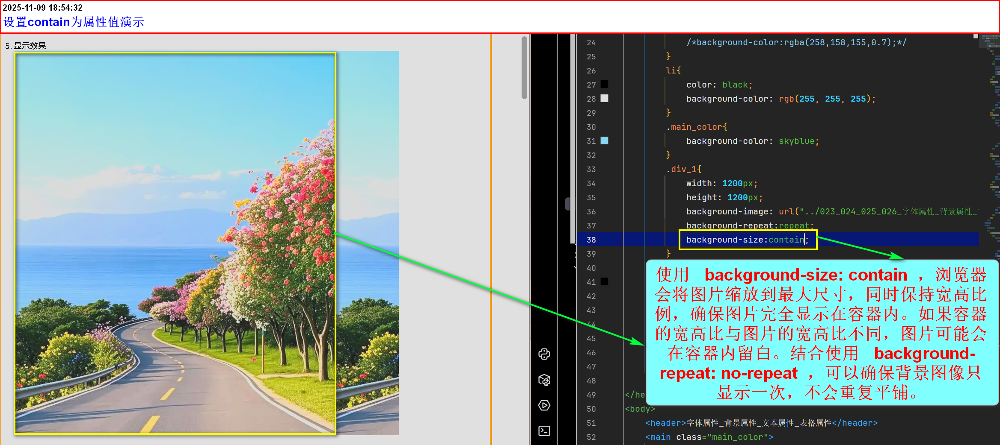
- 默认图片，平铺方式默认
- background-position属性
- 定义：该属性设置背景图像的起始位置，其默认值是：0% 0%
- 各个值及说明
left top 左上角 left center 左中 left bottom 左下 right top 右上角 right center 右中 right bottom 右下 center top 中上 center center 中中 center bottom 中下 X% y% 第一个值是水平位置，第二个值是垂直位置。
左上角是0% o%
右下角是100% 100%
如果只指定了一个值，其他值默认是50%，默认是0% 0%xpos ypos 单位是像素 - 部分值演示：
- 默认图片：
- 左中为起始位置：
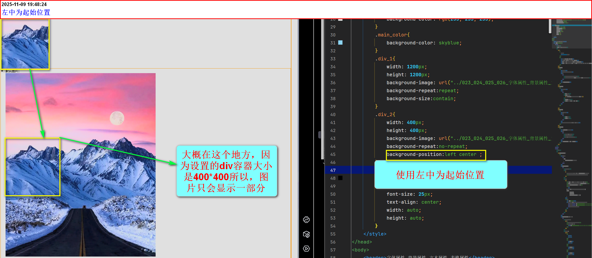 - 右下为起始位置：
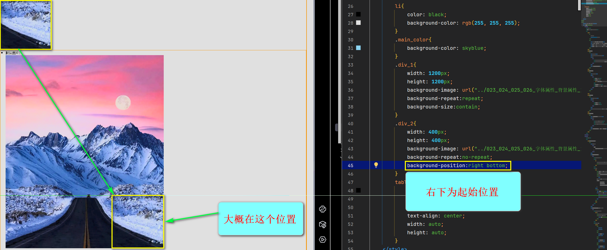 - 中上为起始位置：
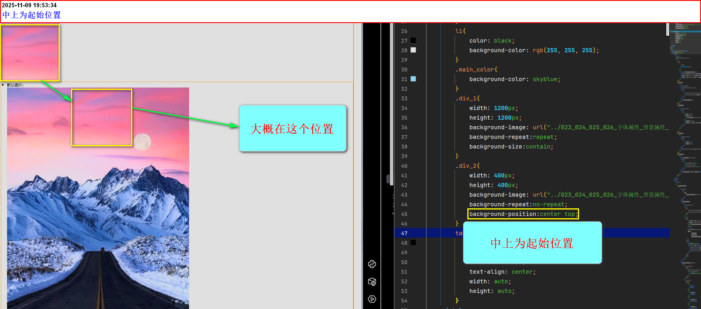
- 总结：
- 该属性设置的是：当容器比实际背景图片小时，该将哪一部分作为背景。
- 依靠的就是以上给的值
- 默认图片：
文本属性
文本属性即：控制文本显示效果
- text-align属性
- 定义：指定文本元素的水平对齐方式
- 各个值及描述
值 描述 left 文本居左排列，默认值 right 文本居右排列 center 文本居中排列 - 各个值，演示
- 默认图片： 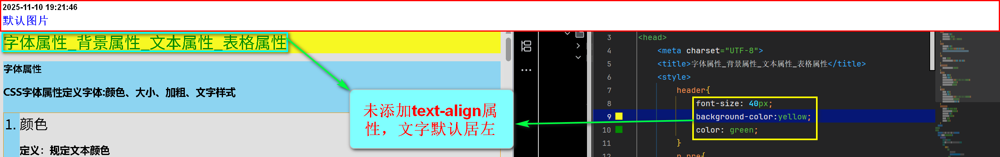
- left演示:
由此可见，当不添加text-align属性的时候，文字默认居左
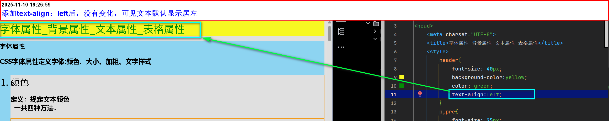 - right演示 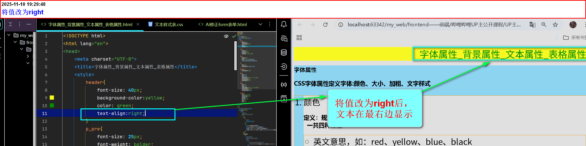
- center演示 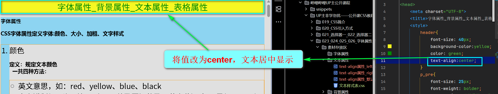
- text-decoration属性：
- 定义： text-decoration属性规定添加到文本的修饰，下划线、上划线、删除线等
- 各个值及描述
值 描述 underline 定义下划线 overline 定义上划线 line-through 定义删除线 - 各个值，演示：
默认文本：
我是定义下划线
我是定义删除线
我是定义上划线- 默认文本： 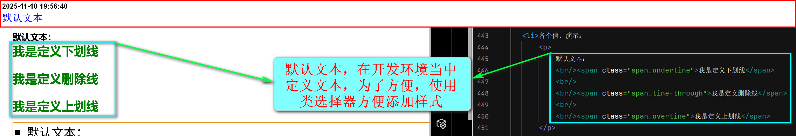
- 添加属性值： 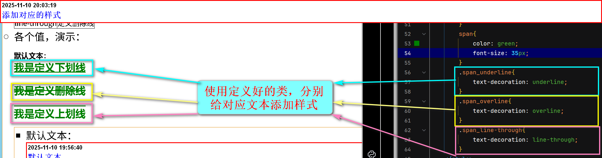
- text-transform属性
- 定义：text-transform属性控制文本的大小写
- 各个值及描述
值 描述 capitalize 定义每个单词开头大写 uppercase 定义全部大写字母 lowercase 定义全部小写字母 - 各个值，演示：
默认文本:
定义每个单词开头大写:capitalize study
定义全部大写字母：uppercase study
定义全部小写字母：Lower Study- 默认文本： 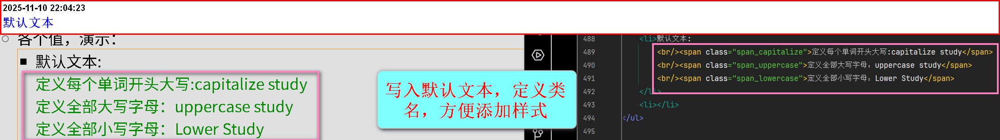
- 添加样式效果： 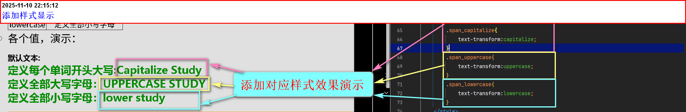
- text-indent属性
- 定义：text-indent属性规定文本块中首行文本的缩进
- 属性演示：
这是一段检测text-indent属性的文本素材:
秋天，是大自然最慷慨的馈赠。它像一位技艺精湛的画家，将世界染成一片金黄与火红的画卷。你看那枫叶，在秋风中摇曳生姿，像燃烧的火焰；你瞧那稻田，沉甸甸的稻穗弯下了腰，仿佛在向辛勤的农民鞠躬。 秋天的空气总是带着一丝清爽和凉意，深呼吸，仿佛能闻到泥土和落叶混合在一起的芬芳。 人们纷纷走出家门，去欣赏这秋日的美景，或者在公园里漫步，感受着秋天的宁静与平和。 秋天不仅仅是景色的美丽，更是收获的季节，象征着希望与成长
- 默认文本：
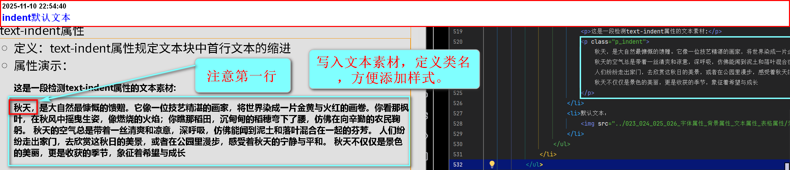 - 添加样式效果：
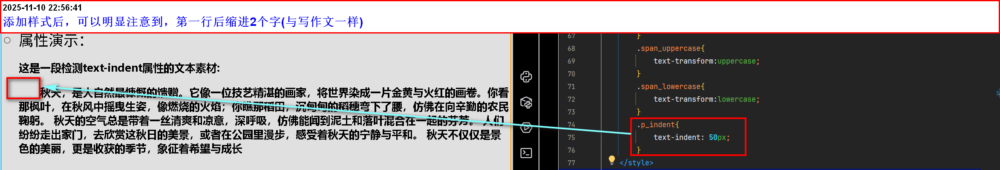 - 注意：
文本的缩进只在每一个块级标签，第一行文本有效
表格属性
好处：使用CSS可以使HTML表格更美观
- 表格边框(border属性)
- 定义：指定CSS表格边框，使用border属性
- 代码示例：
table,td{ border:1px solid black; }其中:
border为属性声明，第一个值为边框的宽度(越高越宽)
第二个值为边框的形式(solid[实线],dashed[虚线],dotted[点线],double[双实线],none[无边框])
第三个值为颜色(同样适用[英文、十六进制数、rgb、rgba]) - border属性演示：
- 素材准备
单元格 单元格 单元格 单元格 单元格 单元格 单元格 单元格 单元格 单元格 单元格 单元格 单元格 单元格 单元格 单元格 单元格 单元格 - 演示：
- 默认表格显示效果 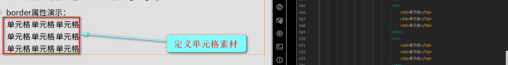
- 添加样式： 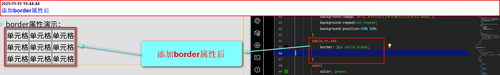
- 素材准备
- 折叠边框(border-collapse)
- 定义：border-collapse属性设置表格的边框是否被折叠成一个单一的边框或隔开
- 演示： 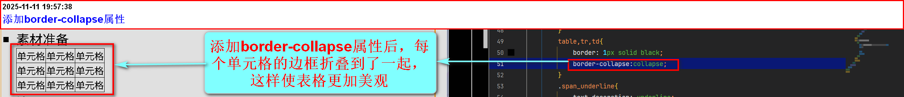
- 表格宽度和高度(width,height)
- 定义：width和height属性(声明)定义表格的宽度和高度
- 演示： 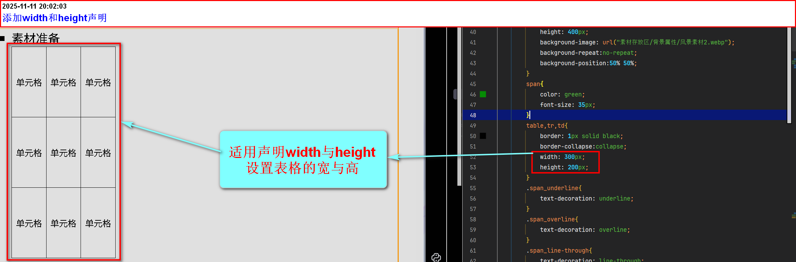
- 表格内文本对齐方式
- 方式分：水平对齐和垂直对齐属性
- 表格素材： 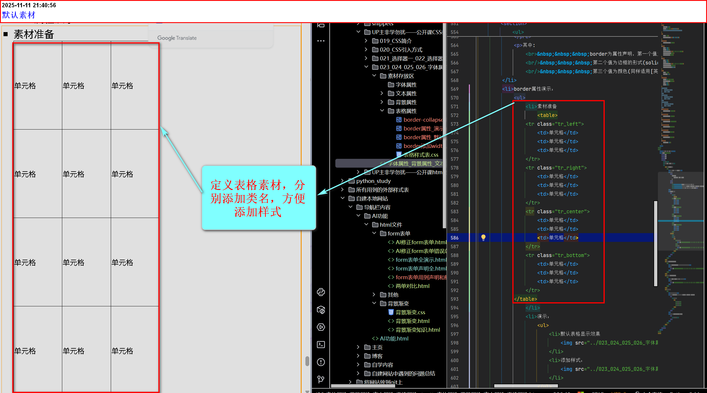
- 水平对齐：text-align属性设置水平对齐方式，向左(left),向右(right),居中(center),
- 水平对齐演示：

- 水平对齐演示：
- 垂直对齐方式：vertical-align属性设置垂直对齐方式，向上(top),向下(bottom),居中(center)
- 垂直对齐演示： 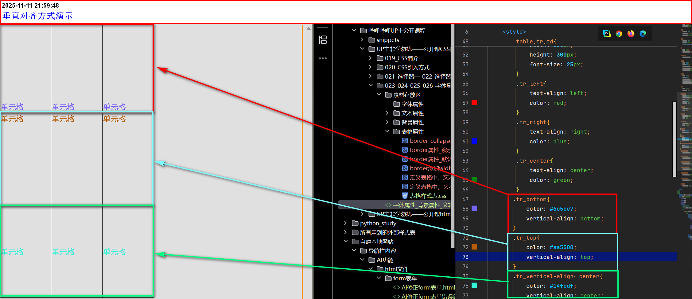
-
- 总结：
- 水平对齐方式与垂直对齐方式可以一起使用，它们互不影响
- 水平对齐方式：text-align属性，且值有：left、right、center
- 垂直对齐方式：vertical-align属性,且值有:center、top、bottom
- 表格填充
- 定义：如果在表的内容中控制空格之间的边框距离，应使用td和th元素的填充属性
- 解释：说白了就是：当设置的表格单元格，没有设置宽度和高度，在标签tr和td添加内边距(padding)属性，会使边框与文本有距离
- 代码演示： tr,td{ padding:20px; }
- 演示：
- 表格素材： 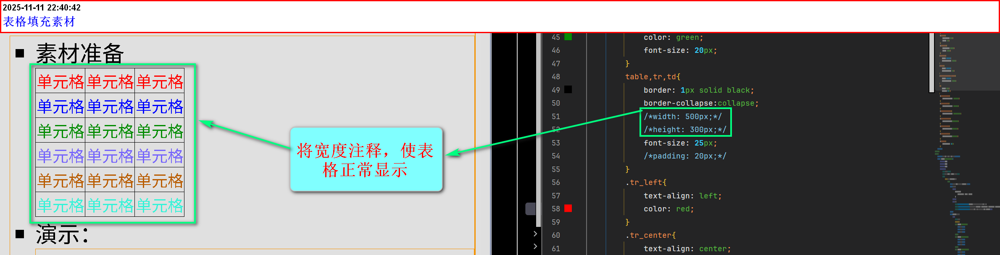
- 表格填充演示： 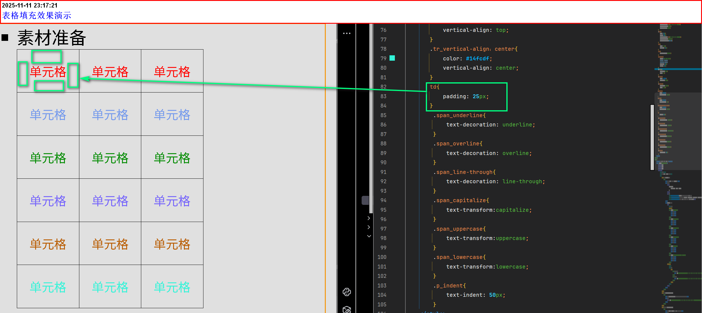
- 注意：
- 表格填充只能用在td和th(本标签和与它们有关的类选择器、ID选择器…………)，其余没有效果
- 文本对齐方式(水平和垂直)可以和填充一起使用，但若不设置宽高，以及填充设置过大或小，肉眼看不出来
- 表格颜色：
- 边框颜色：属性border:值1(宽度) 值2(边框形式) 值3(颜色)
- 背景颜色：属性background-color:值(颜色)
- 边框颜色及背景颜色演示： 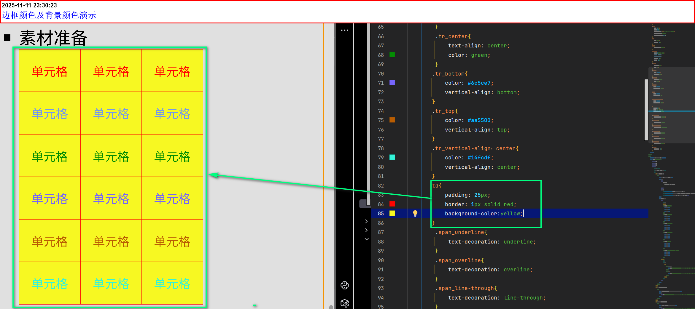